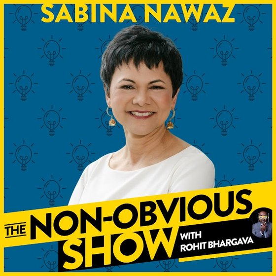

Episode 83
How To Be A Better Boss
with Sabina Nawaz
In this episode, Sabina Nawaz shares insights from her extensive leadership experience, focusing on how pressure, power, and self-awareness influence effective management. Discover practical microhabits and strategies to become a better boss and navigate the loneliness at the top.